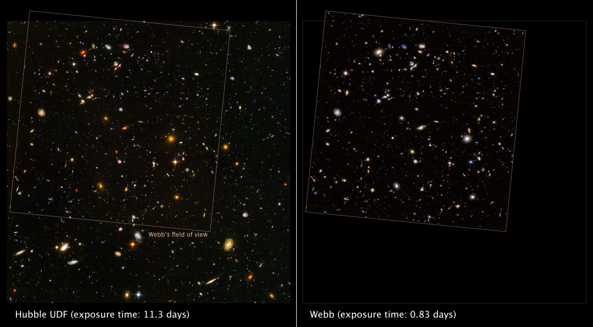
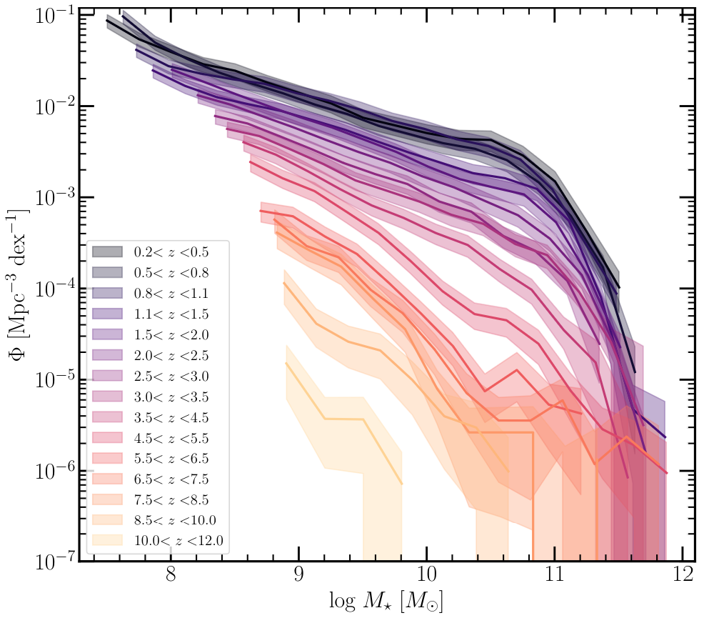
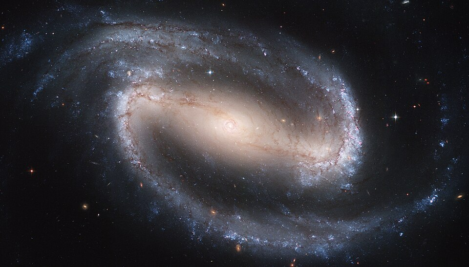
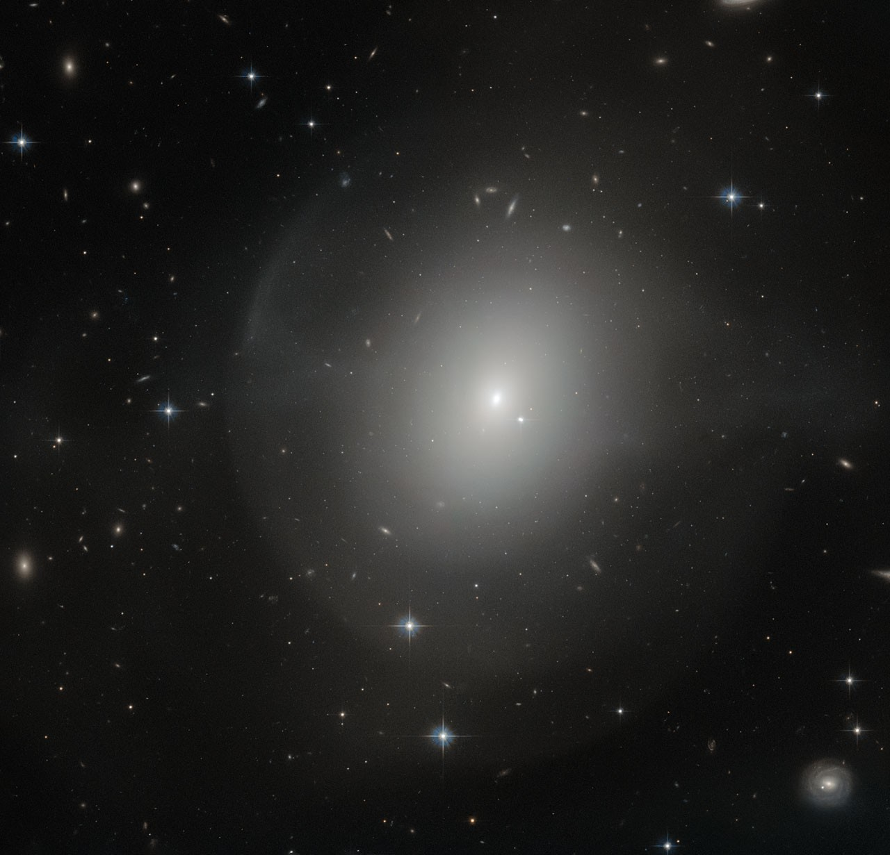
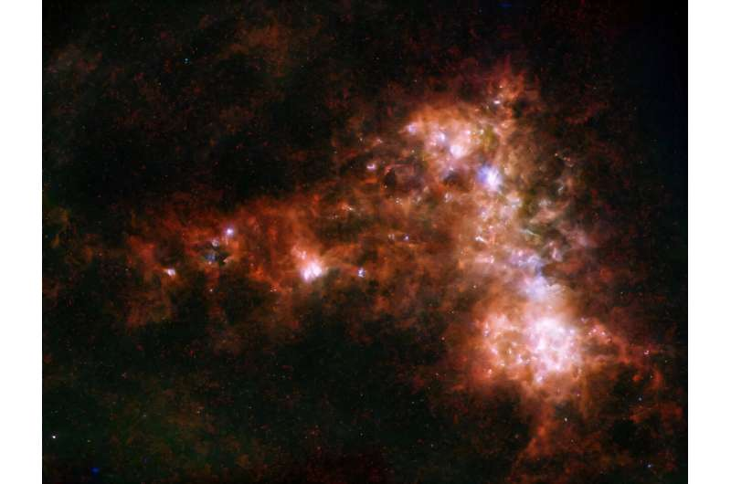
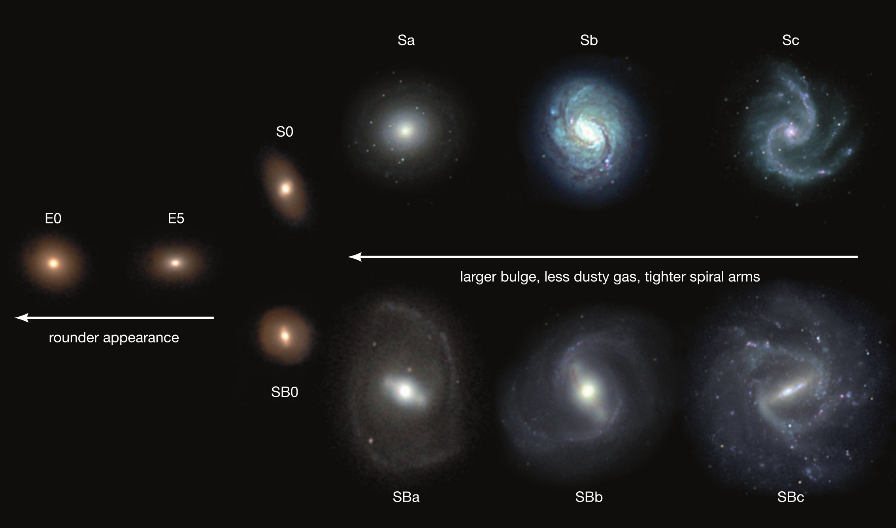
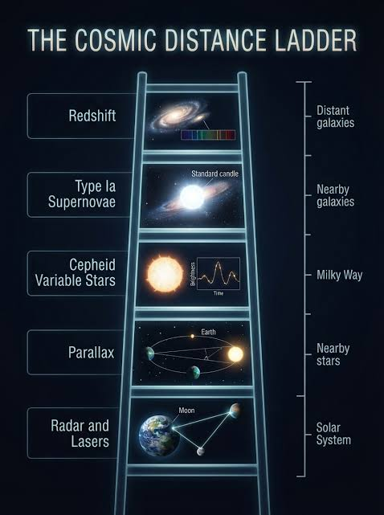
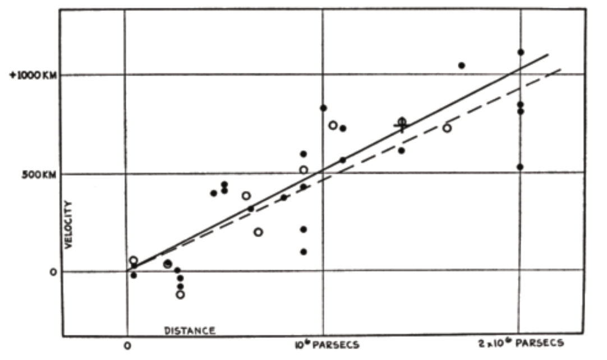

Reading: Chapter 19, 20, 21, NASA library of galaxy images
Top Hat
- MW formation bottom up
- DM question
Galaxies other than the MW

A decade ago, the Hubble space telescope (named after the person who measured the distance to M31 using Leavitt's law for Cepheids) was pointed for a very long time (11.3 days of continuous exposure) to nothing, a dark area of the sky with no known sources. This crazy observational program revealed faint and far galaxies, creating the "HST deep field" images. Since then, this experiment has been repeated, increasing exposures and thus depth of the observations, and re-done with JWST, which was in part designed with the scientific goal of studying galaxies in the early Universe.
N.B.: JWST has a bigger field of view, and more sensitive IR cameras with a bigger mirror, so it can outcompete HST optical and UV sensors in a shorter exposure time.
Galaxy density
Based on observations like these (but typically performed on a wider area of the sky, with a trade-off of going less deep), we can estimate the number density of galaxies in the Universe.
However, we already know that not all galaxies have the same mass (the MW is much larger than both LMC and SM for example!), so we may want to look not just at the number density, but the number density as a function of galaxy mass.
Because the mass-budget is dominated by DM, which we cannot directly see, we can use the stellar mass \(M_{\star}\) as a proxy, knowing that for example for the MW \(M_{\rm tot} \simeq M_{\star} \times 1000\). In the figure below, from Shuntov et al. 2025, each color the number of galaxies per (106pc)3 elements of volume and as a function of their \(M_{\star}\) on the x-axis for one spherical shell of the Universe centered around us:

Black curves are closer to us: anywhere in the Universe, small galaxies outnumber large galaxies (which you would expect in the inside out repeated mergers picture of galaxy evolution) – the curves slope downwards!
Moreover, earlier in the Universe (lighter colors corresponding to farther distances and thus galaxies seen earlier in the Universe's evolution) there are fewer galaxies.
Since its launch, JWST has been revealing very large galaxies very early in the Universe, possibly challenging key elements of the paradigm for galaxy evolution and cosmology.
N.B.: We can use the number of galaxies per unit volume in a given mass-bin to convert estimates of events per galaxy into an intrinsic rate density per unit time:
Galaxy zoo
Galaxies exhibit a diverse set of morphological properties, in terms of their shape, size, and colors, as you can see from the collection of NASA images classified by galaxy type here.
The Galaxy zoo project is an ongoing citizen-scientist effort to crowd source the visual classification of galaxies: this was used to label training set for machine learning classifications, but also provided unexpected discoveries, such as green pea galaxies.

This shows two things:
- we have so many observational data that professional astronomers need the help of amateurs to parse through them (which is useful to design algorithms to then have computers do what thousands of amateurs can collectively do, but faster)
- there is so much unknown out there that dedicated amateur astronomers and citizen scientists can contribute crucial insights and even find and name entire new classes of astronomical objects, green pea galaxies being just one example.
Spiral
We have already encountered spiral galaxies, the MW is one of them. These are big galaxies, with disks containing most ongoing star formation, spiral arms that compress the gas (driving the stars together until they can trigger the formation of new stars from the gas), an extended halo composed of highly inclined and eccentric orbits of mostly old stars dynamically perturbed.


NASA maintains here a catalog of composite images of spiral galaxies, which shows the diversity of features that can occur in a spiral galaxy. Recall that galaxies are never in equilibrium because of flybys and mergers within a galaxy cluster! Therefore, by sampling the diversity of (spiral) galaxies in the Universe we understand which morphologies are easily realized and occur often in nature (ergodicity = studying distributions across space to understand distribution in time).
Spiral galaxies usually are blue and rich in new stars forming in their disks. They are also the typical hosts of core-collapse SNe (the death of short-lived massive stars).
Bar
The rotation of the disk, coupled to the perturbations of incoming galaxy mergers and tides, can cause the formation of a central "bar":

Elliptical
Elliptical galaxies appear red, so their are rich in old, evolved, low mass stars, and don't have much active star formation. They are usually more massive and sit deeper in the DM halo of a galaxy cluster.

Their "round" shape is because all the orbits in a hypothetical initial disk are perturbed onto high inclination, high eccentricity orbits, their larger mass and older age means they had more time for galaxy mergers to generate perturbations, and many stellar orbits.
They can host SNIa (WD explosions), but rarely (if at all) host transient astrophysical sources related to massive stars.
Lenticular
This is an intermediate class between spiral and elliptical: they are disk-y galaxies, but with oversized bulges and no spiral arms. They tend to be dust rich and may be a transitional class.

Irregular
Many (most) small galaxies have irregular shapes: they are never given the time to settle on equilibrium because of the interaction with other galaxies.
We have already seen irregular dwarf galaxies, for example the LMC/SMC pair.

N.B.: many pictures of galaxies are labeled as NGCxxxx. This is the "New Galaxy Catalog", a modern version of the Messier catalog of nebular (extended) sources from the 20th century.
Hubble Galaxy classification scheme
Based on the apparent morphology in the optical range, Galaxies can be classified as:
- Elliptical (E) + number characterizing the oblateness of the galaxy (S0 = spherical)
- Spiral (S) + letter for prominence of the bulge
- Barred spiral (Sb) + letter for the prominence of the bulge

This was originally thought to be an evolutionary sequence, but it is not!
Distance ladder
After using Leavitt's laws to measure the distance to Andromeda (M31) and resolving the great-debate on the size of the Universe in favor of Curtis and the existence of "isolated island universes" which we refer to as galaxies, Hubble started measuring the distances to all nebulae he could find.
The Cepheids used in M31 could not really help for larger distances, and Hubble had to come up with experimental methods, which today have converged in the modern "distance ladder". Each rung at the bottom relies on more precise techniques but limited in the distances they can measure. Each successive rung is calibrated on the previous, allowing to extend the distance measurements:

Hubble only had the second and third rung, and he made lots of wrong hypothesis, mis-identifying distant extragalactic clusters for individual stars, etc., but with these, he measured (typically underestimated) several distances to galaxies (D). By the early 1920s, it was already possible to obtain spectra and recognize red-shifts of known patterns corresponding to specific elements, which probe the bulk velocity of the entire galaxy along the line of sight to the observer.
N.B.: To know more about the distance ladder, I recommend this video by the youtube channel 3b1b (three blue one brown) with guest host the mathematician Terrence Tao. In general this channel is a good resource for math, physics, and science outreach.
Hubble-Lemaitre's law

Several people (including at Lowell observatory) had started noticing a tight correlation between distances and velocities measured through redshifts. Specifically George Lemaitre in a paper published in French on a Belgian journal had stated what is now known as the Hubble (or Hubble-Lemaitre) law:
which states that the velocity \(v\) of a galaxy relative to the MW is proportional to its distance \(D\), and the proportionality constant \(H\) is the same in every direction.
This is a strong hint that the universe is homogeneous on large scales: we are like one raisin in the raisin cake which sees the farthest raising moving faster!
Moreover, this also allows to work back in time to give an age to the Universe as a whole! \(v=L/t=HD\) so taking \(L=D\), that is looking at the velocity it takes for the universe to get to its size today, we get \(H=1/t\) related to the age of the Universe - which now must have a beginning \(1/H\) time units ago, and an evolution.